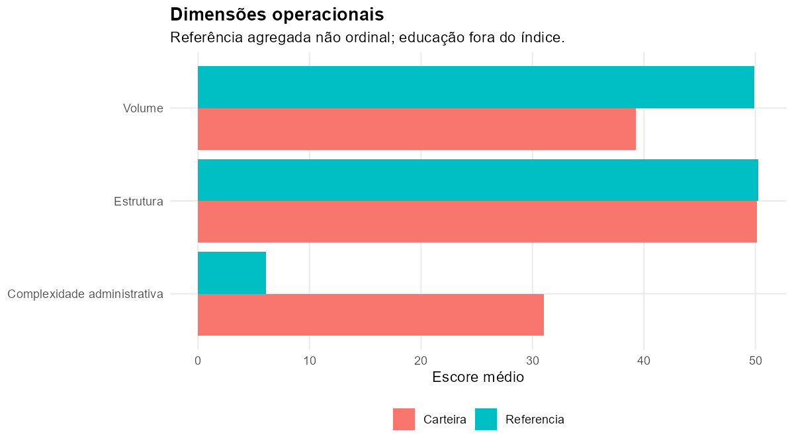
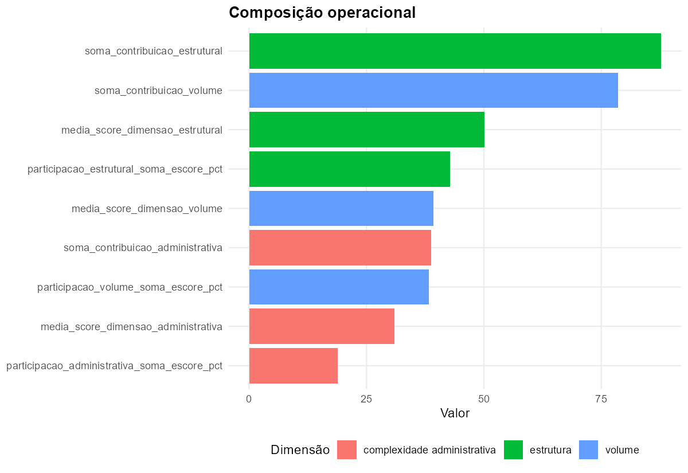
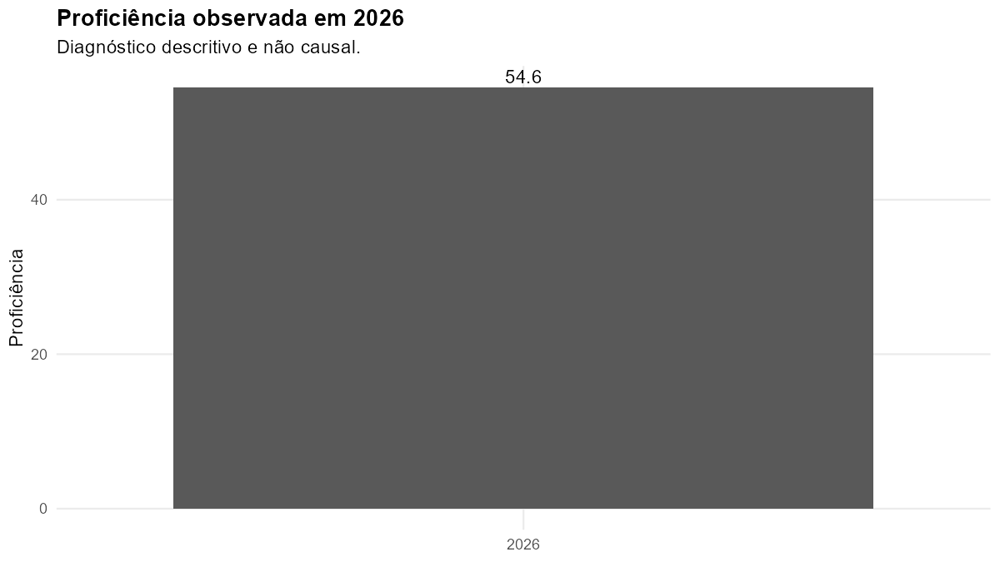

| ID | Escola | INEP | Vínculo administrativo | Índice | Volume | Estrutura | Administração | Ficha |
|---|---|---|---|---|---|---|---|---|
| ESC_021 | EMEF JOAO CARLOS DAVILA PAIXAO CORTES - LACADOR | 43219543 | julia | 28,6 | 3,0 | 39,0 | 55,0 | abrir ficha |
| ESC_026 | EMEF LIDOVINO FANTON | 43109144 | julia | 56,3 | 91,6 | 56,2 | 0,0 | abrir ficha |
| ESC_031 | EMEF NEUSA GOULART BRIZOLA | 43177042 | julia | 22,7 | 17,3 | 45,0 | 0,0 | abrir ficha |
| ESC_046 | EMEF SEN ALBERTO PASQUALINI | 43107842 | julia | 53,9 | 76,1 | 67,2 | 0,0 | abrir ficha |
| ESC_054 | ESC EST ENS FUN PROFESSORA LEOPOLDA BARNEWITZ | 43106668 | julia | 43,5 | 8,5 | 43,1 | 100,0 | abrir ficha |